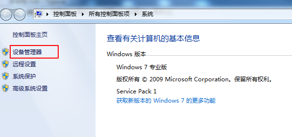
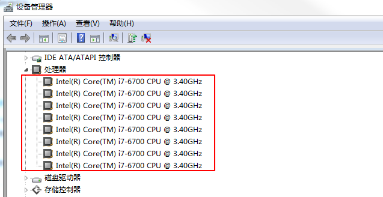
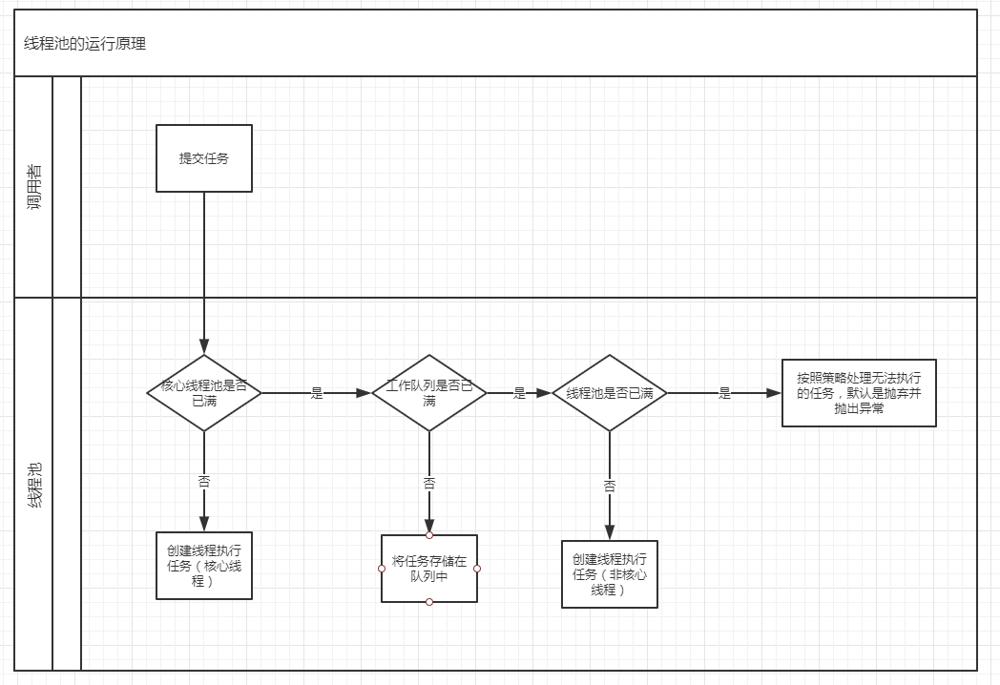
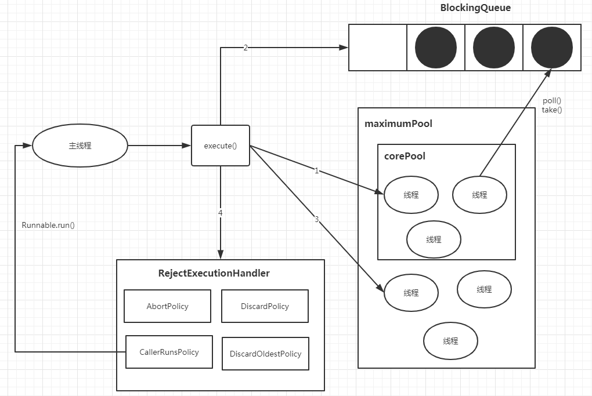
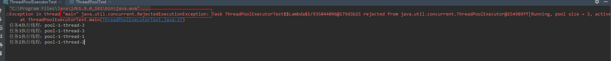

随着科技的进步，现在的电脑及服务器的处理器数量都比较多，以后可能会越来越多，比如我的工作电脑的处理器有8个，怎么查看呢？
计算机右键--属性--设备管理器，打开属性窗口，然后点击“设备管理器”，在“处理器”下可看到所有的处理器：


也可以通过以下Java代码获取到处理器的个数：
System.out.println("CPU个数:" + Runtime.getRuntime().availableProcessors());运行结果如下所示：
CPU个数:8
既然处理器的个数增加了，如果还使用传统的串行编程，就有点浪费资源了，因此，为了提高资源利用率，让各个处理器都忙碌起来，就需要引入并发编程，要引入并发编程，就引入了多线程。
可以说，使用多线程的最直接目的就是为了提高资源利用率，资源的利用率提高了，系统的吞吐率也就相应提高了。
在一定的范围内，增加线程可以提高应用程序的吞吐率，但线程并不是越多越好（因为线程的创建与销毁都需要很大的开销），如果超过了某个范围，不仅会降低应用程序的执行速度，严重的话，应用程序甚至会崩溃，以至于不得不重启应用程序。
为了避免这种问题，就需要对应用程序可以创建的线程数量进行限制，确保在线程数量达到限制时，程序也不会耗尽资源，线程池就是为了解决这种问题而出现的。
线程池：管理一组工作线程的资源池。
线程池与工作队列密切相关，工作队列中保存了所有等待执行的任务。
工作者线程的任务就是从工作队列中获取一个任务，执行任务，然后返回线程池并等待下一个任务。
使用线程池可以带来以下好处：
Executors类提供了以下4个静态方法来快速的创建线程池：
首先看下newFixedThreadPool()方法的使用方式：
ExecutorService threadPool = Executors.newFixedThreadPool(10);它的源码为：
public static ExecutorService newFixedThreadPool(int nThreads) {
return new ThreadPoolExecutor(nThreads, nThreads,
0L, TimeUnit.MILLISECONDS,
new LinkedBlockingQueue<Runnable>());
}说明：newFixedThreadPool将创建一个固定长度的线程池，每当提交一个任务时就创建一个线程，直到达到线程池的最大数量，这时线程池的规模将不再变化（如果某个线程由于发生了未预期的Exception而结束，那么线程池会补充一个新的线程）。
然后看下newCachedThreadPool()方法的使用方式：
ExecutorService threadPool = Executors.newCachedThreadPool();它的源码为：
public static ExecutorService newCachedThreadPool() {
return new ThreadPoolExecutor(0, Integer.MAX_VALUE,
60L, TimeUnit.SECONDS,
new SynchronousQueue<Runnable>());
}说明：newCachedThreadPool将创建一个可缓存的线程池，如果线程池的规模超过了处理需求时，那么将回收空闲的线程，而当需求增加时，则添加新的线程，线程池的最大规模为Integer.MAX_VALUE。
然后看下newSingleThreadExecutor()方法的使用方式：
ExecutorService threadPool = Executors.newSingleThreadExecutor();它的源码为：
public static ExecutorService newSingleThreadExecutor() {
return new FinalizableDelegatedExecutorService
(new ThreadPoolExecutor(1, 1,
0L, TimeUnit.MILLISECONDS,
new LinkedBlockingQueue<Runnable>()));
}说明：newSingleThreadExecutor是一个单线程的Executor，它创建单个工作者线程来执行任务，如果这个线程异常结束，就创建一个新的线程来替代。
newSingleThreadExecutor可以确保依照任务在队列中的顺序来串行执行。
最后看下newScheduledThreadPool()方法的使用方式：
ExecutorService threadPool = Executors.newScheduledThreadPool(10);它的源码为：
public static ScheduledExecutorService newScheduledThreadPool(int corePoolSize) {
return new ScheduledThreadPoolExecutor(corePoolSize);
}
public ScheduledThreadPoolExecutor(int corePoolSize) {
super(corePoolSize, Integer.MAX_VALUE, 0, NANOSECONDS,
new DelayedWorkQueue());
}super指向如下代码：
public ThreadPoolExecutor(int corePoolSize,
int maximumPoolSize,
long keepAliveTime,
TimeUnit unit,
BlockingQueue<Runnable> workQueue) {
this(corePoolSize, maximumPoolSize, keepAliveTime, unit, workQueue,
Executors.defaultThreadFactory(), defaultHandler);
}说明：newScheduledThreadPool将创建一个固定长度的线程池，而且以延迟或者定时的方式来执行任务，类似于Timer。
可以发现，以上4种方式最终都指向了ThreadPoolExecutor的以下构造函数，只是很多参数没让你指定，传递了默认值而已：
public ThreadPoolExecutor(int corePoolSize,
int maximumPoolSize,
long keepAliveTime,
TimeUnit unit,
BlockingQueue<Runnable> workQueue,
ThreadFactory threadFactory,
RejectedExecutionHandler handler) {
// 省略具体的代码
}虽然使用这4个方法可以快速的创建线程池，但还是不推荐使用，第一，很多参数都设置了默认值，不便于你理解各个参数的具体含义，第二，参数的默认值可能会造成一定的问题，最好是由使用者根据自己的需求自行指定。
那么这7个参数分别代表什么含义呢？请接着往下看。
ThreadPoolExecutor共有以下4个构造函数，推荐使用这种方式来创建线程池：
public ThreadPoolExecutor(int corePoolSize,
int maximumPoolSize,
long keepAliveTime,
TimeUnit unit,
BlockingQueue<Runnable> workQueue) {
this(corePoolSize, maximumPoolSize, keepAliveTime, unit, workQueue,
Executors.defaultThreadFactory(), defaultHandler);
}
public ThreadPoolExecutor(int corePoolSize,
int maximumPoolSize,
long keepAliveTime,
TimeUnit unit,
BlockingQueue<Runnable> workQueue,
ThreadFactory threadFactory) {
this(corePoolSize, maximumPoolSize, keepAliveTime, unit, workQueue,
threadFactory, defaultHandler);
}
public ThreadPoolExecutor(int corePoolSize,
int maximumPoolSize,
long keepAliveTime,
TimeUnit unit,
BlockingQueue<Runnable> workQueue,
RejectedExecutionHandler handler) {
this(corePoolSize, maximumPoolSize, keepAliveTime, unit, workQueue,
Executors.defaultThreadFactory(), handler);
}以上3个也都指向参数最全的第4个构造函数：
public ThreadPoolExecutor(int corePoolSize,
int maximumPoolSize,
long keepAliveTime,
TimeUnit unit,
BlockingQueue<Runnable> workQueue,
ThreadFactory threadFactory,
RejectedExecutionHandler handler) {
// 省略具体的代码
}以下为各个参数的讲解：
corePoolSize：核心线程数。
maximumPoolSize：最大线程数。
最大线程数=核心线程数+非核心线程数。
keepAliveTime：非核心线程闲置超时时间。
一个非核心线程，如果不干活(闲置状态)的时长超过这个参数所设定的时长，就会被销毁掉，如果设置了allowCoreThreadTimeOut = true，则会作用于核心线程。
unit：参数keepAliveTime的时间单位，如秒、分、小时。
workQueue：工作队列，即要执行的任务队列，里面存储等待执行的任务。
这里的阻塞队列可选择的有：LinkedBlockingQueue、ArrayBlockingQueue、SynchronousQueue、DelayedWorkQueue。
newFixedThreadPool()方法默认使用的LinkedBlockingQueue，
newCachedThreadPool()方法默认使用的SynchronousQueue，
newSingleThreadExecutor()方法默认使用的LinkedBlockingQueue，
newScheduledThreadPool()方法默认使用的DelayedWorkQueue。
threadFactory：线程工厂，用来用来创建线程。
handler：饱和策略/拒绝处理任务时的策略。
当workQueue已满，并且线程池的线程数已达到maximumPoolSize，此时新提交的任务会交由RejectedExecutionHandler handler处理，主要有以下4种策略：
AbortPolicy：中止策略，抛弃任务并抛出未检查的RejectedExecutionException，这也是默认的饱和策略。
DiscardPolicy：抛弃策略，直接抛弃任务，但不抛出异常。
DiscardOldestPolicy：抛弃最旧的策略，抛弃下一个将被执行的任务，然后尝试重新提交新的任务。
CallerRunsPolicy：调用者运行策略，将任务回退到调用者，在调用者所在的线程执行该任务。
可以通过下面2张图来理解线程池的运行原理：


1)如果线程池中的线程小于corePoolSize，则创建新线程来处理任务，这时创建的线程为核心线程。
2)如果线程中的线程等于或者大于corePoolSize，则将任务放到工作队列中，即上图中的BlockingQueue。
3)如果工作队列已满，无法将任务加入到BlockingQueue，则创建新的线程来处理任务，这时创建的线程为非核心线程，非核心线程在空闲一段时间后会被回收销毁掉（keepAliveTime和unit就是用来定义这个空闲的时间是多少）。
4)如果创建新线程导致线程池中的线程数超过了maximumPoolSize，任务将被拒绝，并调用RejectedExecutionHandler.rejectedExecution()方法。
新建如下示例代码，创建1个corePoolSize为2，maximumPoolSize为3的线程池：
import java.util.concurrent.*;
public class ThreadPoolExecutorTest {
public static void main(String[] args) {
ThreadPoolExecutor threadPoolExecutor = new ThreadPoolExecutor(2, 3, 60L, TimeUnit.SECONDS,
new LinkedBlockingQueue<>(1));
threadPoolExecutor.execute(() -> {
try {
Thread.sleep(3 * 1000);
System.out.println("任务1执行线程：" + Thread.currentThread().getName());
} catch (InterruptedException e) {
e.printStackTrace();
}
});
threadPoolExecutor.execute(() -> {
System.out.println("任务2执行线程：" + Thread.currentThread().getName());
});
}
}运行结果为：
任务2执行线程：pool-1-thread-2
任务1执行线程：pool-1-thread-1
可以看出，因为线程池中的线程数小于corePoolSize，线程池创建了2个核心线程来分别执行任务1和任务2。
修改代码为如下所示，开启3个任务：
import java.util.concurrent.*;
public class ThreadPoolExecutorTest {
public static void main(String[] args) {
ThreadPoolExecutor threadPoolExecutor = new ThreadPoolExecutor(2, 3, 60L, TimeUnit.SECONDS,
new LinkedBlockingQueue<>(1));
threadPoolExecutor.execute(() -> {
try {
Thread.sleep(3 * 1000);
System.out.println("任务1执行线程：" + Thread.currentThread().getName());
} catch (InterruptedException e) {
e.printStackTrace();
}
});
threadPoolExecutor.execute(() -> {
try {
Thread.sleep(5 * 1000);
System.out.println("任务2执行线程：" + Thread.currentThread().getName());
} catch (InterruptedException e) {
e.printStackTrace();
}
});
threadPoolExecutor.execute(() -> System.out.println("任务3执行线程：" + Thread.currentThread().getName()));
}
}运行结果为：
任务1执行线程：pool-1-thread-1
任务3执行线程：pool-1-thread-1
任务2执行线程：pool-1-thread-2
可以看出，执行任务3时并没有新建线程，而是先放入了工作队列，最后由线程1执行完成。
在上面的代码中新增个任务4：
threadPoolExecutor.execute(() -> System.out.println("任务4执行线程：" + Thread.currentThread().getName()));此时运行结果为：
任务4执行线程：pool-1-thread-3
任务3执行线程：pool-1-thread-3
任务1执行线程：pool-1-thread-1
任务2执行线程：pool-1-thread-2
可以看出，任务3是先放入了工作队列，任务4放不到工作队列（空间已满），所以创建了第3个线程来执行，执行完毕后从队列里获取到任务3执行，任务1和任务2分别由线程1和线程2执行。
修改下任务4的代码，并添加任务5：
threadPoolExecutor.execute(() -> {
try {
Thread.sleep(2 * 1000);
System.out.println("任务4执行线程：" + Thread.currentThread().getName());
} catch (InterruptedException e) {
e.printStackTrace();
}
});
threadPoolExecutor.execute(() -> System.out.println("任务5执行线程：" + Thread.currentThread().getName()));此时运行结果为：
Exception in thread "main" java.util.concurrent.RejectedExecutionException: Task ThreadPoolExecutorTest$$Lambda$5/935044096@179d3b25 rejected from java.util.concurrent.ThreadPoolExecutor@254989ff[Running, pool size = 3, active threads = 3, queued tasks = 1, completed tasks = 0]
at java.util.concurrent.ThreadPoolExecutor$AbortPolicy.rejectedExecution(ThreadPoolExecutor.java:2063)
at java.util.concurrent.ThreadPoolExecutor.reject(ThreadPoolExecutor.java:830)
at java.util.concurrent.ThreadPoolExecutor.execute(ThreadPoolExecutor.java:1379)
at ThreadPoolExecutorTest.main(ThreadPoolExecutorTest.java:37)
任务4执行线程：pool-1-thread-3任务3执行线程：pool-1-thread-3
任务1执行线程：pool-1-thread-1
任务2执行线程：pool-1-thread-2
可以看出，当提交任务5时，由于工作队列已满， 且线程池中的线程数已经为3，所以该任务被抛弃并抛出了java.util.concurrent.RejectedExecutionException异常。

如果你看到了这里，是否会好奇参数maximumPoolSize设置为多少合适呢？
这个问题，我们下次讲解，欢迎持续关注，哈哈！
Brian Goetz《Java并发编程实战》
Java线程池-ThreadPoolExecutor原理分析与实战
互联网大厂Java面试题：使用无界队列的线程池会导致内存飙升吗？【石杉的架构笔记】
如果觉得文章写的不错，欢迎关注我的微信公众号：「申城异乡人」，所有博客会同步更新。
如果有兴趣，也可以添加我的微信：zwwhnly_002，一起交流和探讨技术。